Article
12-Factor Agents: Principles for Building Reliable LLM Applications
In short
The autonomous loop — here's a prompt, here's a bag of tools, keep going until you're done — reaches about 70–80% quality and stops. Past ten or twenty turns the context window grows long enough that the model gets lost and repeats the same broken approach. Horthy's claim, from talking to roughly a hundred technical founders, is that everyone hits this and most of them start over.
What works instead is small agents — three to ten steps — embedded in pipelines that are otherwise ordinary deterministic code. The twelve factors (plus a thirteenth in the appendix) are the engineering practices that make that possible, and each can be adopted on its own without rewriting anything.
This page reproduces the guide in full rather than summarising it.
Contents
- How we got here
- Factor 1 — Natural Language to Tool Calls
- Factor 2 — Own Your Prompts
- Factor 3 — Own Your Context Window
- Factor 4 — Tools Are Just Structured Outputs
- Factor 5 — Unify Execution State and Business State
- Factor 6 — Launch/Pause/Resume with Simple APIs
- Factor 7 — Contact Humans with Tool Calls
- Factor 8 — Own Your Control Flow
- Factor 9 — Compact Errors into Context Window
- Factor 10 — Small, Focused Agents
- Factor 11 — Trigger from Anywhere
- Factor 12 — Make Your Agent a Stateless Reducer
- Factor 13 — Pre-fetch All the Context You Might Need
- Glossary
- Sources
00How we got here
Everything below is Dex Horthy's own text, from the
12-factor agents repository
he maintains with contributors at HumanLayer. It is reproduced here in full rather than
summarised, under the
Creative Commons Attribution-ShareAlike 4.0
licence the repository publishes it under; this page carries that same licence. Code samples
are Apache 2.0.
Only the packaging is this library's: the figures were downloaded and captioned, the thirteen
factors were given a section and a table of contents each, and a glossary was added at the end.
Read the original repository for the
living version — it is still being edited, and this copy is pinned to commit
d20c728.
In the spirit of 12 Factor Apps. The source for this project is public at https://github.com/humanlayer/12-factor-agents, and I welcome your feedback and contributions. Let's figure this out together!
Missed the AI Engineer World's Fair? Catch the talk here
Looking for Context Engineering? Jump straight to factor 3
Want to contribute to npx/uvx create-12-factor-agent - check out the discussion thread
Hi, I'm Dex. I've been hacking on AI agents for a while.
I've tried every agent framework out there, from the plug-and-play crew/langchains to the "minimalist" smolagents of the world to the "production grade" langraph, griptape, etc.
I've talked to a lot of really strong founders, in and out of YC, who are all building really impressive things with AI. Most of them are rolling the stack themselves. I don't see a lot of frameworks in production customer-facing agents.
I've been surprised to find that most of the products out there billing themselves as "AI Agents" are not all that agentic. A lot of them are mostly deterministic code, with LLM steps sprinkled in at just the right points to make the experience truly magical.
Agents, at least the good ones, don't follow the "here's your prompt, here's a bag of tools, loop until you hit the goal" pattern. Rather, they are comprised of mostly just software.
So, I set out to answer:
What are the principles we can use to build LLM-powered software that is actually good enough to put in the hands of production customers?
Welcome to 12-factor agents. As every Chicago mayor since Daley has consistently plastered all over the city's major airports, we're glad you're here.
Special thanks to @iantbutler01, @tnm, @hellovai, @stantonk, @balanceiskey, @AdjectiveAllison, @pfbyjy, @a-churchill, and the SF MLOps community for early feedback on this guide.
The Short Version: The 12 Factors
Even if LLMs continue to get exponentially more powerful, there will be core engineering techniques that make LLM-powered software more reliable, more scalable, and easier to maintain.
Why 12-factor agents?
At the end of the day, this approach just doesn't work as well as we want it to.
In building HumanLayer, I've talked to at least 100 SaaS builders (mostly technical founders) looking to make their existing product more agentic. The journey usually goes something like:
- Decide you want to build an agent
- Product design, UX mapping, what problems to solve
- Want to move fast, so grab $FRAMEWORK and get to building
- Get to 70-80% quality bar
- Realize that 80% isn't good enough for most customer-facing features
- Realize that getting past 80% requires reverse-engineering the framework, prompts, flow, etc.
- Start over from scratch
Design Patterns for great LLM applications
After digging through hundreds of AI libriaries and working with dozens of founders, my instinct is this:
- There are some core things that make agents great
- Going all in on a framework and building what is essentially a greenfield rewrite may be counter-productive
- There are some core principles that make agents great, and you will get most/all of them if you pull in a framework
- BUT, the fastest way I've seen for builders to get high-quality AI software in the hands of customers is to take small, modular concepts from agent building, and incorporate them into their existing product
- These modular concepts from agents can be defined and applied by most skilled software engineers, even if they don't have an AI background
The fastest way I've seen for builders to get good AI software in the hands of customers is to take small, modular concepts from agent building, and incorporate them into their existing product
The longer version: how we got here
You don't have to listen to me
Whether you're new to agents or an ornery old veteran like me, I'm going to try to convince you to throw out most of what you think about AI Agents, take a step back, and rethink them from first principles. (spoiler alert if you didn't catch the OpenAI responses launch a few weeks back, but pushing MORE agent logic behind an API ain't it)
Agents are software, and a brief history thereof
let's talk about how we got here
60 years ago
We're gonna talk a lot about Directed Graphs (DGs) and their Acyclic friends, DAGs. I'll start by pointing out that...well...software is a directed graph. There's a reason we used to represent programs as flow charts.
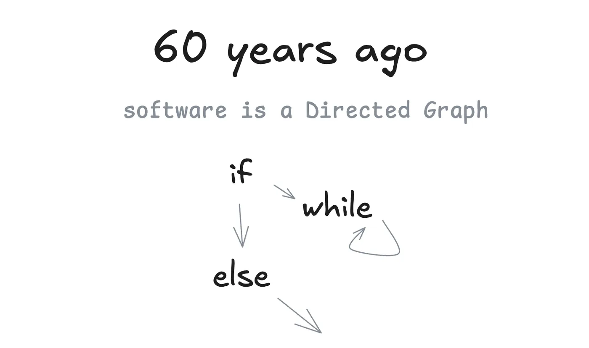
20 years ago
Around 20 years ago, we started to see DAG orchestrators become popular. We're talking classics like Airflow, Prefect, some predecessors, and some newer ones like (dagster, inggest, windmill). These followed the same graph pattern, with the added benefit of observability, modularity, retries, administration, etc.
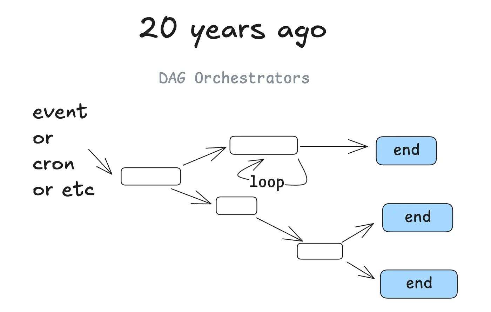
10-15 years ago
When ML models started to get good enough to be useful, we started to see DAGs with ML models sprinkled in. You might imagine steps like "summarize the text in this column into a new column" or "classify the support issues by severity or sentiment".
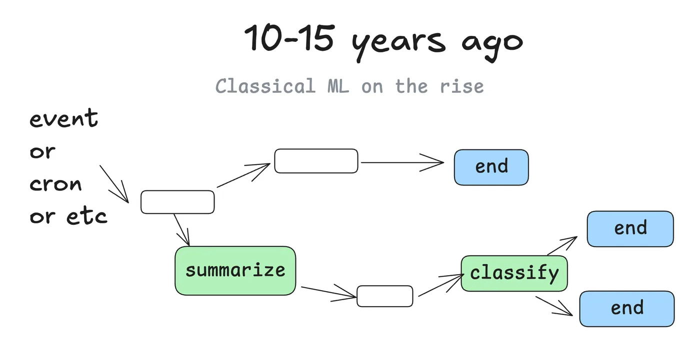
But at the end of the day, it's still mostly the same good old deterministic software.
The promise of agents
I'm not the first person to say this, but my biggest takeaway when I started learning about agents, was that you get to throw the DAG away. Instead of software engineers coding each step and edge case, you can give the agent a goal and a set of transitions:
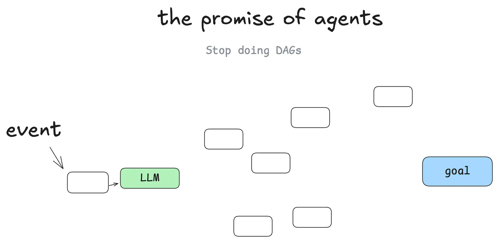
And let the LLM make decisions in real time to figure out the path
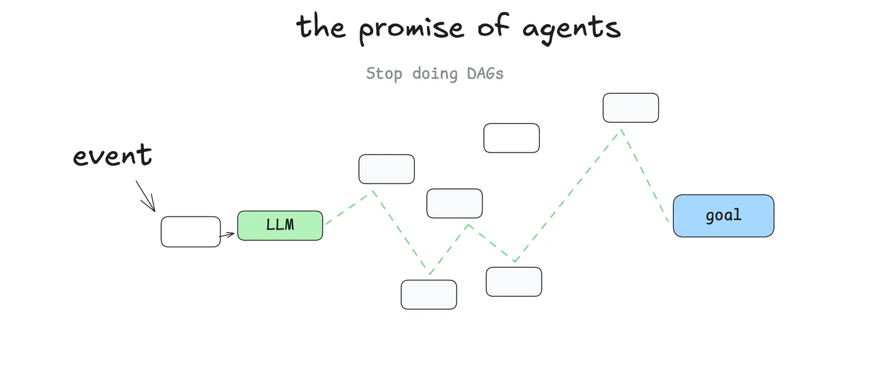
The promise here is that you write less software, you just give the LLM the "edges" of the graph and let it figure out the nodes. You can recover from errors, you can write less code, and you may find that LLMs find novel solutions to problems.
Agents as loops
Put another way, you've got this loop consisting of 3 steps:
- LLM determines the next step in the workflow, outputting structured json ("tool calling")
- Deterministic code executes the tool call
- The result is appended to the context window
- repeat until the next step is determined to be "done"
initial_event = {"message": "..."}
context = [initial_event]
while True:
next_step = await llm.determine_next_step(context)
context.append(next_step)
if (next_step.intent === "done"):
return next_step.final_answer
result = await execute_step(next_step)
context.append(result)
Our initial context is just the starting event (maybe a user message, maybe a cron fired, maybe a webhook, etc), and we ask the llm to choose the next step (tool) or to determine that we're done.
Here's a multi-step example:
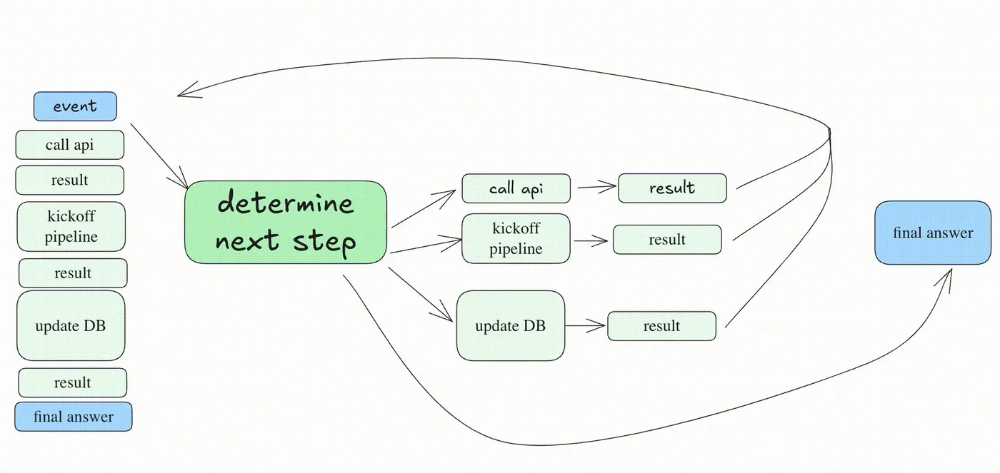
And the "materialized" DAG that was generated would look something like:
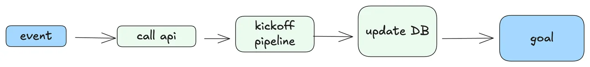
The problem with this "loop until you solve it" pattern
The biggest problems with this pattern:
- Agents get lost when the context window gets too long - they spin out trying the same broken approach over and over again
- literally thats it, but that's enough to kneecap the approach
Even if you haven't hand-rolled an agent, you've probably seen this long-context problem in working with agentic coding tools. They just get lost after a while and you need to start a new chat.
I'll even perhaps posit something I've heard in passing quite a bit, and that YOU probably have developed your own intuition around:
Even as models support longer and longer context windows, you'll ALWAYS get better results with a small, focused prompt and context
Most builders I've talked to pushed the "tool calling loop" idea to the side when they realized that anything more than 10-20 turns becomes a big mess that the LLM can't recover from. Even if the agent gets it right 90% of the time, that's miles away from "good enough to put in customer hands". Can you imagine a web app that crashed on 10% of page loads?
Update 2025-06-09 - I really like how @swyx put this:
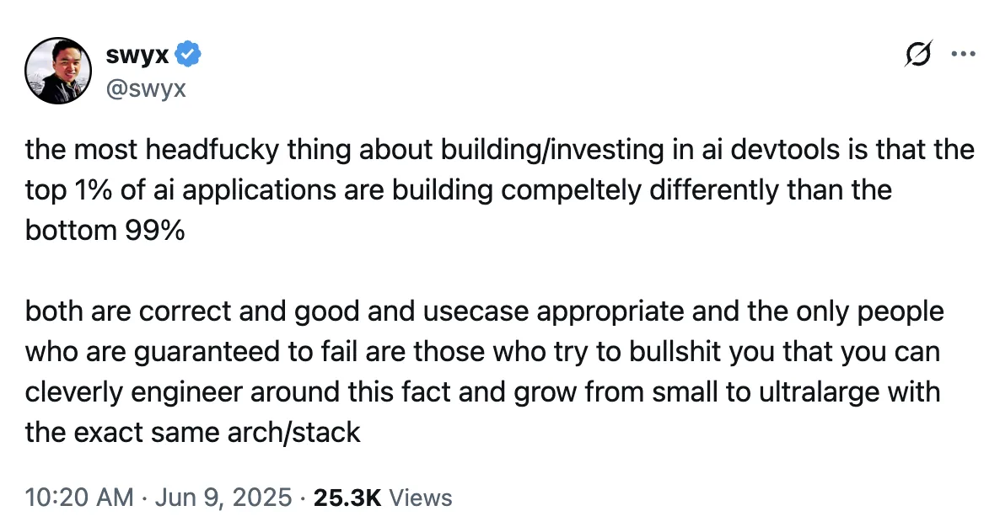
What actually works - micro agents
One thing that I have seen in the wild quite a bit is taking the agent pattern and sprinkling it into a broader more deterministic DAG.
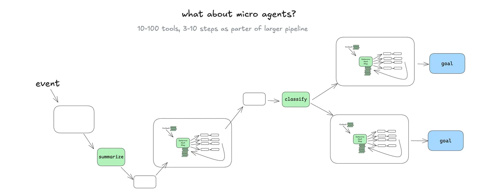
You might be asking - "why use agents at all in this case?" - we'll get into that shortly, but basically, having language models managing well-scoped sets of tasks makes it easy to incorporate live human feedback, translating it into workflow steps without spinning out into context error loops. (factor 1, factor 3 factor 7).
having language models managing well-scoped sets of tasks makes it easy to incorporate live human feedback...without spinning out into context error loops
A real life micro agent
Here's an example of how deterministic code might run one micro agent responsible for handling the human-in-the-loop steps for deployment.
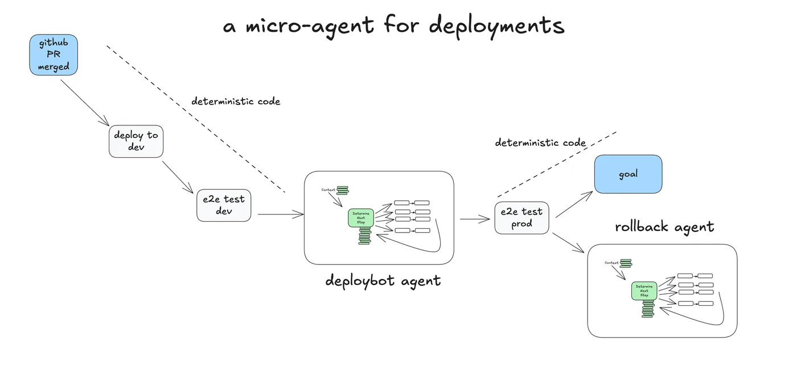
- Human Merges PR to GitHub main branch
- Deterministic Code Deploys to staging env
- Deterministic Code Runs end-to-end (e2e) tests against staging
- Deterministic Code Hands to agent for prod deployment, with initial context: "deploy SHA 4af9ec0 to production"
- Agent calls
deploy_frontend_to_prod(4af9ec0) - Deterministic code requests human approval on this action
- Human Rejects the action with feedback "can you deploy the backend first?"
- Agent calls
deploy_backend_to_prod(4af9ec0) - Deterministic code requests human approval on this action
- Human approves the action
- Deterministic code executed the backend deployment
- Agent calls
deploy_frontend_to_prod(4af9ec0) - Deterministic code requests human approval on this action
- Human approves the action
- Deterministic code executed the frontend deployment
- Agent determines that the task was completed successfully, we're done!
- Deterministic code run the end-to-end tests against production
- Deterministic code task completed, OR pass to rollback agent to review failures and potentially roll back
This example is based on a real life OSS agent we've shipped to manage our deployments at Humanlayer - here is a real conversation I had with it last week:
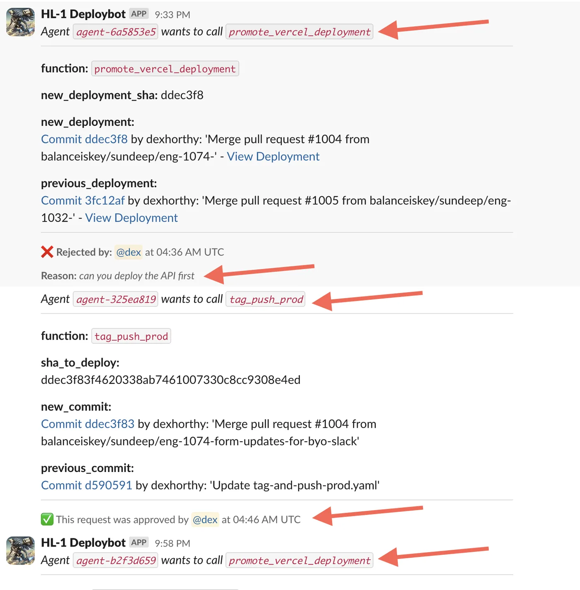
We haven't given this agent a huge pile of tools or tasks. The primary value in the LLM is parsing the human's plaintext feedback and proposing an updated course of action. We isolate tasks and contexts as much as possible to keep the LLM focused on a small, 5-10 step workflow.
Here's another more classic support / chatbot demo.
So what's an agent really?
- prompt - tell an LLM how to behave, and what "tools" it has available. The output of the prompt is a JSON object that describe the next step in the workflow (the "tool call" or "function call"). (factor 2)
- switch statement - based on the JSON that the LLM returns, decide what to do with it. (part of factor 8)
- accumulated context - store the list of steps that have happened and their results (factor 3)
- for loop - until the LLM emits some sort of "Terminal" tool call (or plaintext response), add the result of the switch statement to the context window and ask the LLM to choose the next step. (factor 8)
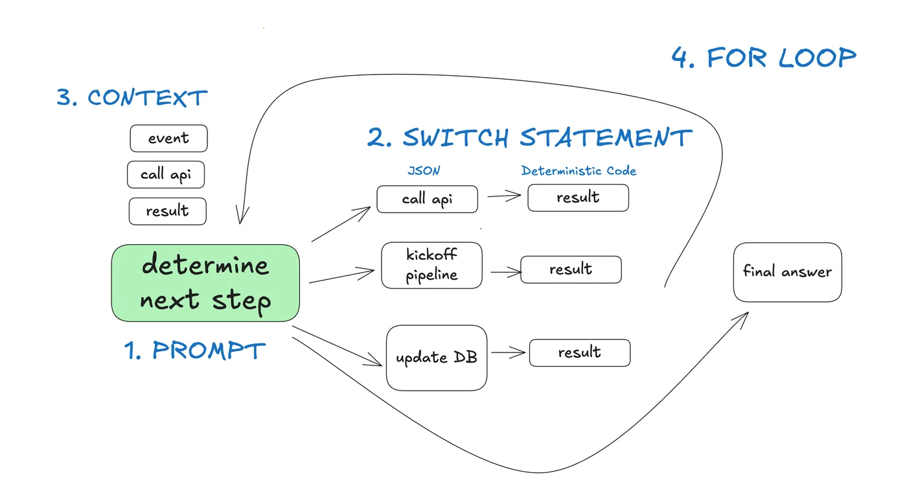
In the "deploybot" example, we gain a couple benefits from owning the control flow and context accumulation:
- In our switch statement and for loop, we can hijack control flow to pause for human input or to wait for completion of long-running tasks
- We can trivially serialize the context window for pause+resume
- In our prompt, we can optimize the heck out of how we pass instructions and "what happened so far" to the LLM
Part II will formalize these patterns so they can be applied to add impressive AI features to any software project, without needing to go all in on conventional implementations/definitions of "AI agent".
01Factor 1 — Natural Language to Tool Calls
One of the most common patterns in agent building is to convert natural language to structured tool calls. This is a powerful pattern that allows you to build agents that can reason about tasks and execute them.
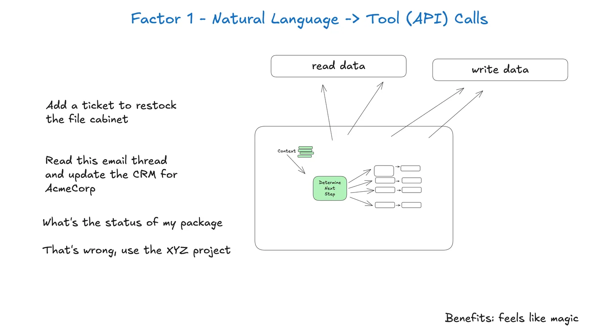
This pattern, when applied atomically, is the simple translation of a phrase like
can you create a payment link for $750 to Terri for sponsoring the february AI tinkerers meetup?
to a structured object that describes a Stripe API call like
{
"function": {
"name": "create_payment_link",
"parameters": {
"amount": 750,
"customer": "cust_128934ddasf9",
"product": "prod_8675309",
"price": "prc_09874329fds",
"quantity": 1,
"memo": "Hey Jeff - see below for the payment link for the february ai tinkerers meetup"
}
}
}
Note: in reality the stripe API is a bit more complex, a real agent that does this (video) would list customers, list products, list prices, etc to build this payload with the proper ids, or include those ids in the prompt/context window (we'll see below how those are kinda the same thing though!)
From there, deterministic code can pick up the payload and do something with it. (More on this in factor 3)
# The LLM takes natural language and returns a structured object
nextStep = await llm.determineNextStep(
"""
create a payment link for $750 to Jeff
for sponsoring the february AI tinkerers meetup
"""
)
# Handle the structured output based on its function
if nextStep.function == 'create_payment_link':
stripe.paymentlinks.create(nextStep.parameters)
return # or whatever you want, see below
elif nextStep.function == 'something_else':
# ... more cases
pass
else: # the model didn't call a tool we know about
# do something else
pass
NOTE: While a full agent would then receive the API call result and loop with it, eventually returning something like
I've successfully created a payment link for $750 to Terri for sponsoring the february AI tinkerers meetup. Here's the link: https://buy.stripe.com/test_1234567890
Instead, We're actually going to skip that step here, and save it for another factor, which you may or may not want to also incorporate (up to you!)
02Factor 2 — Own Your Prompts
Don't outsource your prompt engineering to a framework.
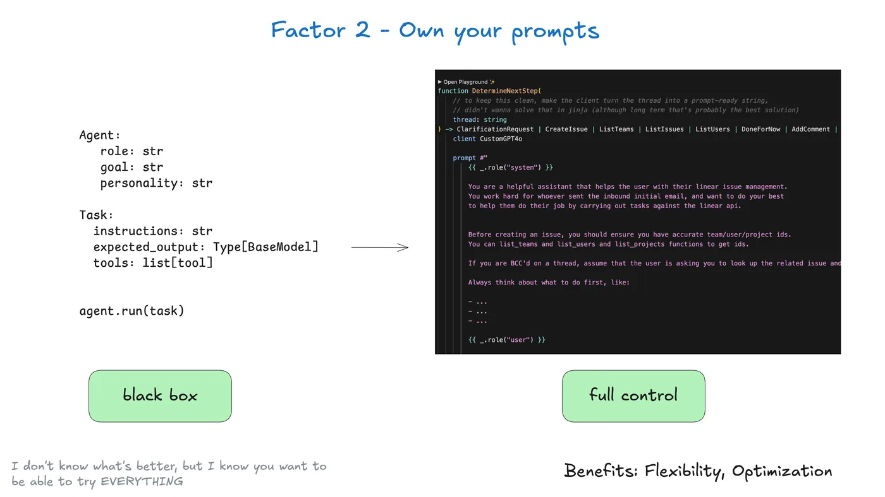
By the way, this is far from novel advice:
Some frameworks provide a "black box" approach like this:
agent = Agent(
role="...",
goal="...",
personality="...",
tools=[tool1, tool2, tool3]
)
task = Task(
instructions="...",
expected_output=OutputModel
)
result = agent.run(task)
This is great for pulling in some TOP NOTCH prompt engineering to get you started, but it is often difficult to tune and/or reverse engineer to get exactly the right tokens into your model.
Instead, own your prompts and treat them as first-class code:
function DetermineNextStep(thread: string) -> DoneForNow | ListGitTags | DeployBackend | DeployFrontend | RequestMoreInformation {
prompt #"
{{ _.role("system") }}
You are a helpful assistant that manages deployments for frontend and backend systems.
You work diligently to ensure safe and successful deployments by following best practices
and proper deployment procedures.
Before deploying any system, you should check:
- The deployment environment (staging vs production)
- The correct tag/version to deploy
- The current system status
You can use tools like deploy_backend, deploy_frontend, and check_deployment_status
to manage deployments. For sensitive deployments, use request_approval to get
human verification.
Always think about what to do first, like:
- Check current deployment status
- Verify the deployment tag exists
- Request approval if needed
- Deploy to staging before production
- Monitor deployment progress
{{ _.role("user") }}
{{ thread }}
What should the next step be?
"#
}
(the above example uses BAML to generate the prompt, but you can do this with any prompt engineering tool you want, or even just template it manually)
If the signature looks a little funny, we'll get to that in factor 4 - tools are just structured outputs
function DetermineNextStep(thread: string) -> DoneForNow | ListGitTags | DeployBackend | DeployFrontend | RequestMoreInformation {
Key benefits of owning your prompts:
- Full Control: Write exactly the instructions your agent needs, no black box abstractions
- Testing and Evals: Build tests and evals for your prompts just like you would for any other code
- Iteration: Quickly modify prompts based on real-world performance
- Transparency: Know exactly what instructions your agent is working with
- Role Hacking: take advantage of APIs that support nonstandard usage of user/assistant roles - for example, the now-deprecated non-chat flavor of OpenAI "completions" API. This includes some so-called "model gaslighting" techniques
Remember: Your prompts are the primary interface between your application logic and the LLM.
Having full control over your prompts gives you the flexibility and prompt control you need for production-grade agents.
I don't know what's the best prompt, but I know you want the flexibility to be able to try EVERYTHING.
03Factor 3 — Own Your Context Window
You don't necessarily need to use standard message-based formats for conveying context to an LLM.
At any given point, your input to an LLM in an agent is "here's what's happened so far, what's the next step"
Everything is context engineering. LLMs are stateless functions that turn inputs into outputs. To get the best outputs, you need to give them the best inputs.
Creating great context means:
- The prompt and instructions you give to the model
- Any documents or external data you retrieve (e.g. RAG)
- Any past state, tool calls, results, or other history
- Any past messages or events from related but separate histories/conversations (Memory)
- Instructions about what sorts of structured data to output
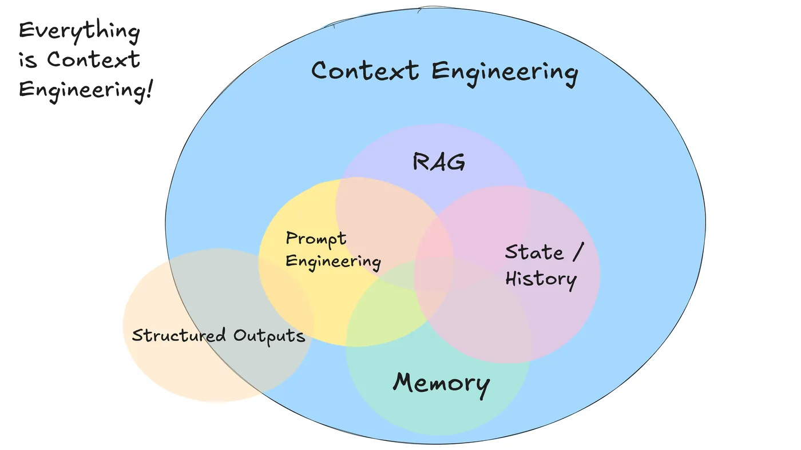
on context engineering
This guide is all about getting as much as possible out of today's models. Notably not mentioned are:
- Changes to models parameters like temperature, top_p, frequency_penalty, presence_penalty, etc.
- Training your own completion or embedding models
- Fine-tuning existing models
Again, I don't know what's the best way to hand context to an LLM, but I know you want the flexibility to be able to try EVERYTHING.
Standard vs Custom Context Formats
Most LLM clients use a standard message-based format like this:
[
{
"role": "system",
"content": "You are a helpful assistant..."
},
{
"role": "user",
"content": "Can you deploy the backend?"
},
{
"role": "assistant",
"content": null,
"tool_calls": [
{
"id": "1",
"name": "list_git_tags",
"arguments": "{}"
}
]
},
{
"role": "tool",
"name": "list_git_tags",
"content": "{\"tags\": [{\"name\": \"v1.2.3\", \"commit\": \"abc123\", \"date\": \"2024-03-15T10:00:00Z\"}, {\"name\": \"v1.2.2\", \"commit\": \"def456\", \"date\": \"2024-03-14T15:30:00Z\"}, {\"name\": \"v1.2.1\", \"commit\": \"abe033d\", \"date\": \"2024-03-13T09:15:00Z\"}]}",
"tool_call_id": "1"
}
]
While this works great for most use cases, if you want to really get THE MOST out of today's LLMs, you need to get your context into the LLM in the most token- and attention-efficient way you can.
As an alternative to the standard message-based format, you can build your own context format that's optimized for your use case. For example, you can use custom objects and pack/spread them into one or more user, system, assistant, or tool messages as makes sense.
Here's an example of putting the whole context window into a single user message:
[
{
"role": "system",
"content": "You are a helpful assistant..."
},
{
"role": "user",
"content": |
Here's everything that happened so far:
<slack_message>
From: @alex
Channel: #deployments
Text: Can you deploy the backend?
</slack_message>
<list_git_tags>
intent: "list_git_tags"
</list_git_tags>
<list_git_tags_result>
tags:
- name: "v1.2.3"
commit: "abc123"
date: "2024-03-15T10:00:00Z"
- name: "v1.2.2"
commit: "def456"
date: "2024-03-14T15:30:00Z"
- name: "v1.2.1"
commit: "ghi789"
date: "2024-03-13T09:15:00Z"
</list_git_tags_result>
what's the next step?
}
]
The model may infer that you're asking it what's the next step by the tool schemas you supply, but it never hurts to roll it into your prompt template.
code example
We can build this with something like:
class Thread:
events: List[Event]
class Event:
# could just use string, or could be explicit - up to you
type: Literal["list_git_tags", "deploy_backend", "deploy_frontend", "request_more_information", "done_for_now", "list_git_tags_result", "deploy_backend_result", "deploy_frontend_result", "request_more_information_result", "done_for_now_result", "error"]
data: ListGitTags | DeployBackend | DeployFrontend | RequestMoreInformation |
ListGitTagsResult | DeployBackendResult | DeployFrontendResult | RequestMoreInformationResult | string
def event_to_prompt(event: Event) -> str:
data = event.data if isinstance(event.data, str) \
else stringifyToYaml(event.data)
return f"<{event.type}>\n{data}\n</{event.type}>"
def thread_to_prompt(thread: Thread) -> str:
return '\n\n'.join(event_to_prompt(event) for event in thread.events)
Example Context Windows
Here's how context windows might look with this approach:
Initial Slack Request:
<slack_message>
From: @alex
Channel: #deployments
Text: Can you deploy the latest backend to production?
</slack_message>
After Listing Git Tags:
<slack_message>
From: @alex
Channel: #deployments
Text: Can you deploy the latest backend to production?
Thread: []
</slack_message>
<list_git_tags>
intent: "list_git_tags"
</list_git_tags>
<list_git_tags_result>
tags:
- name: "v1.2.3"
commit: "abc123"
date: "2024-03-15T10:00:00Z"
- name: "v1.2.2"
commit: "def456"
date: "2024-03-14T15:30:00Z"
- name: "v1.2.1"
commit: "ghi789"
date: "2024-03-13T09:15:00Z"
</list_git_tags_result>
After Error and Recovery:
<slack_message>
From: @alex
Channel: #deployments
Text: Can you deploy the latest backend to production?
Thread: []
</slack_message>
<deploy_backend>
intent: "deploy_backend"
tag: "v1.2.3"
environment: "production"
</deploy_backend>
<error>
error running deploy_backend: Failed to connect to deployment service
</error>
<request_more_information>
intent: "request_more_information_from_human"
question: "I had trouble connecting to the deployment service, can you provide more details and/or check on the status of the service?"
</request_more_information>
<human_response>
data:
response: "I'm not sure what's going on, can you check on the status of the latest workflow?"
</human_response>
From here your next step might be:
nextStep = await determine_next_step(thread_to_prompt(thread))
{
"intent": "get_workflow_status",
"workflow_name": "tag_push_prod.yaml",
}
The XML-style format is just one example - the point is you can build your own format that makes sense for your application. You'll get better quality if you have the flexibility to experiment with different context structures and what you store vs. what you pass to the LLM.
Key benefits of owning your context window:
- Information Density: Structure information in ways that maximize the LLM's understanding
- Error Handling: Include error information in a format that helps the LLM recover. Consider hiding errors and failed calls from context window once they are resolved.
- Safety: Control what information gets passed to the LLM, filtering out sensitive data
- Flexibility: Adapt the format as you learn what works best for your use case
- Token Efficiency: Optimize context format for token efficiency and LLM understanding
Context includes: prompts, instructions, RAG documents, history, tool calls, memory
Remember: The context window is your primary interface with the LLM. Taking control of how you structure and present information can dramatically improve your agent's performance.
Example - information density - same message, fewer tokens:
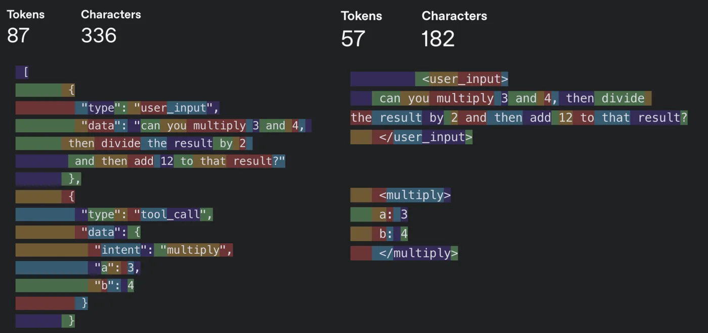
Don't take it from me
About 2 months after 12-factor agents was published, context engineering started to become a pretty popular term.
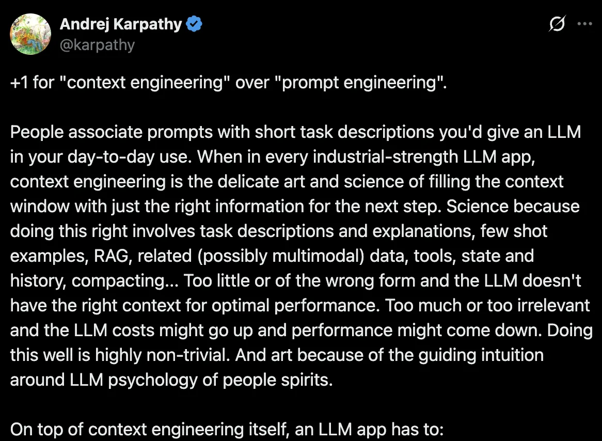
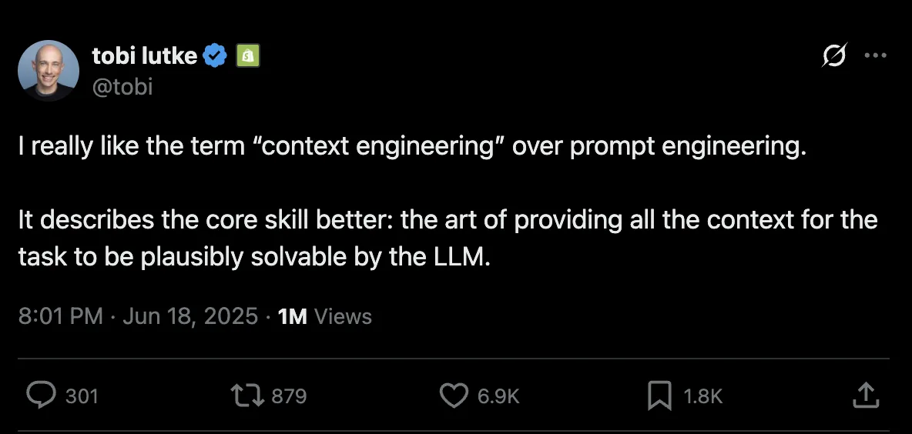
There's also a quite good Context Engineering Cheat Sheet from @lenadroid from July 2025.
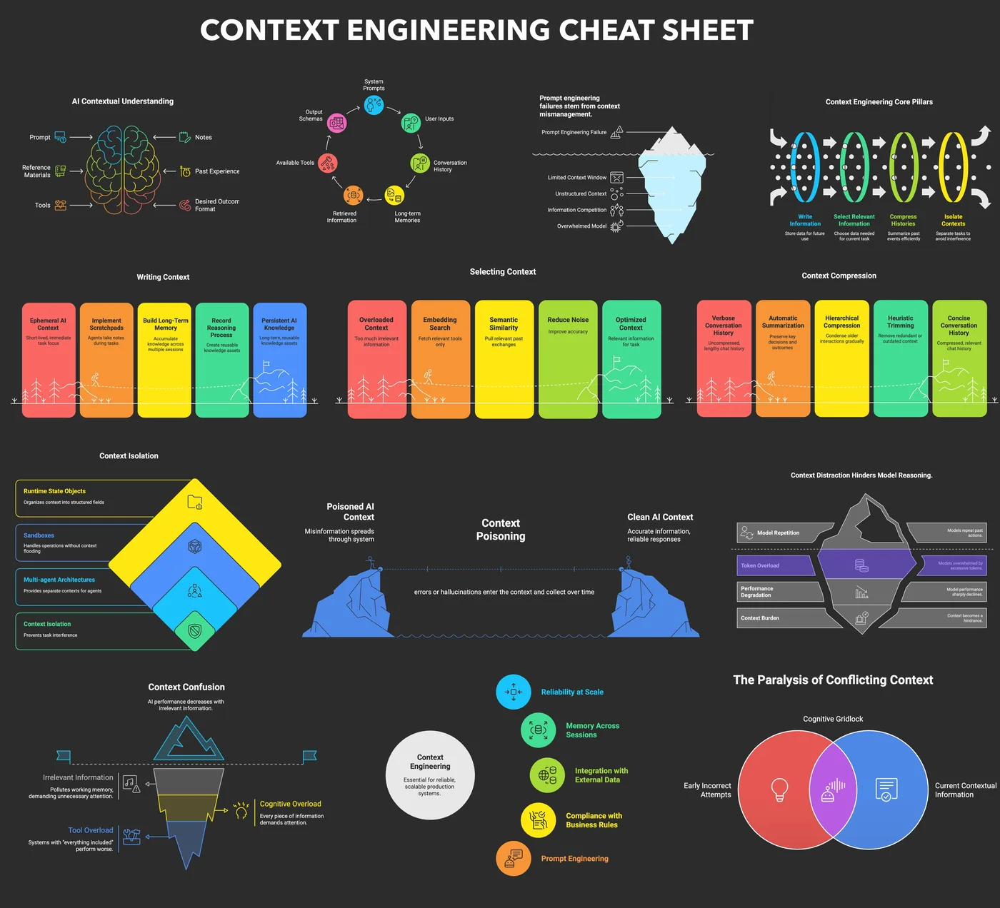
Recurring theme here: I don't know what's the best approach, but I know you want the flexibility to be able to try EVERYTHING.
04Factor 4 — Tools Are Just Structured Outputs
Tools don't need to be complex. At their core, they're just structured output from your LLM that triggers deterministic code.
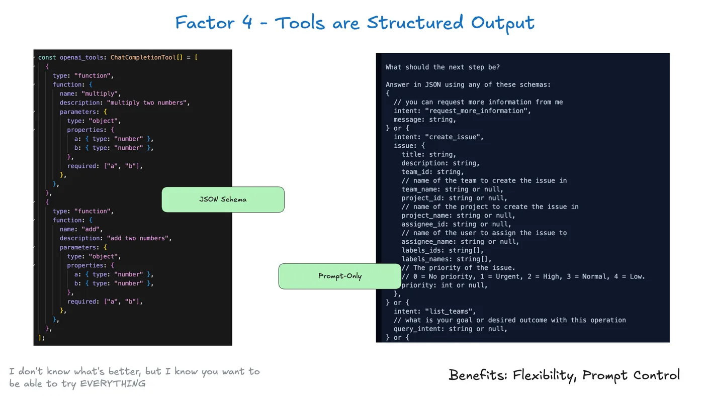
For example, lets say you have two tools CreateIssue and SearchIssues. To ask an LLM to "use one of several tools" is just to ask it to output JSON we can parse into an object representing those tools.
class Issue:
title: str
description: str
team_id: str
assignee_id: str
class CreateIssue:
intent: "create_issue"
issue: Issue
class SearchIssues:
intent: "search_issues"
query: str
what_youre_looking_for: str
The pattern is simple: 1. LLM outputs structured JSON 3. Deterministic code executes the appropriate action (like calling an external API) 4. Results are captured and fed back into the context
This creates a clean separation between the LLM's decision-making and your application's actions. The LLM decides what to do, but your code controls how it's done. Just because an LLM "called a tool" doesn't mean you have to go execute a specific corresponding function in the same way every time.
If you recall our switch statement from above
if nextStep.intent == 'create_payment_link':
stripe.paymentlinks.create(nextStep.parameters)
return # or whatever you want, see below
elif nextStep.intent == 'wait_for_a_while':
# do something monadic idk
else: #... the model didn't call a tool we know about
# do something else
Note: there has been a lot said about the benefits of "plain prompting" vs. "tool calling" vs. "JSON mode" and the performance tradeoffs of each. We'll link some resources to that stuff soon, but not gonna get into it here. See Prompting vs JSON Mode vs Function Calling vs Constrained Generation vs SAP, When should I use function calling, structured outputs, or JSON mode? and OpenAI JSON vs Function Calling.
The "next step" might not be as atomic as just "run a pure function and return the result". You unlock a lot of flexibility when you think of "tool calls" as just a model outputting JSON describing what deterministic code should do. Put this together with factor 8 own your control flow.
05Factor 5 — Unify Execution State and Business State
Even outside the AI world, many infrastructure systems try to separate "execution state" from "business state". For AI apps, this might involve complex abstractions to track things like current step, next step, waiting status, retry counts, etc. This separation creates complexity that may be worthwhile, but may be overkill for your use case.
As always, it's up to you to decide what's right for your application. But don't think you have to manage them separately.
More clearly:
- Execution state: current step, next step, waiting status, retry counts, etc.
- Business state: What's happened in the agent workflow so far (e.g. list of OpenAI messages, list of tool calls and results, etc.)
If possible, SIMPLIFY - unify these as much as possible.
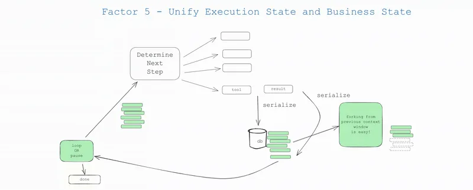
In reality, you can engineer your application so that you can infer all execution state from the context window. In many cases, execution state (current step, waiting status, etc.) is just metadata about what has happened so far.
You may have things that can't go in the context window, like session ids, password contexts, etc, but your goal should be to minimize those things. By embracing factor 3 you can control what actually goes into the LLM
This approach has several benefits:
- Simplicity: One source of truth for all state
- Serialization: The thread is trivially serializable/deserializable
- Debugging: The entire history is visible in one place
- Flexibility: Easy to add new state by just adding new event types
- Recovery: Can resume from any point by just loading the thread
- Forking: Can fork the thread at any point by copying some subset of the thread into a new context / state ID
- Human Interfaces and Observability: Trivial to convert a thread into a human-readable markdown or a rich Web app UI
06Factor 6 — Launch/Pause/Resume with Simple APIs
Agents are just programs, and we have things we expect from how to launch, query, resume, and stop them.
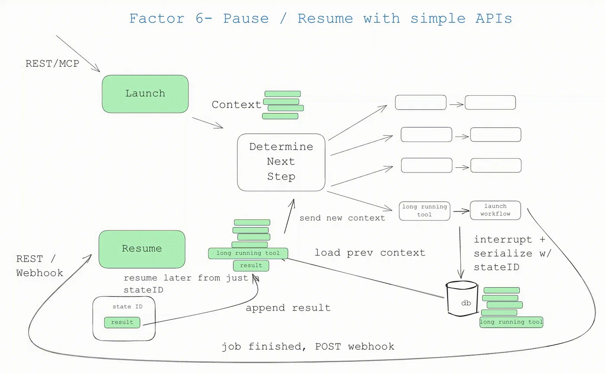
It should be easy for users, apps, pipelines, and other agents to launch an agent with a simple API.
Agents and their orchestrating deterministic code should be able to pause an agent when a long-running operation is needed.
External triggers like webhooks should enable agents to resume from where they left off without deep integration with the agent orchestrator.
Closely related to factor 5 - unify execution state and business state and factor 8 - own your control flow, but can be implemented independently.
Note - often AI orchestrators will allow for pause and resume, but not between the moment of tool selection and tool execution. See also factor 7 - contact humans with tool calls and factor 11 - trigger from anywhere, meet users where they are.
07Factor 7 — Contact Humans with Tool Calls
By default, LLM APIs rely on a fundamental HIGH-STAKES token choice: Are we returning plaintext content, or are we returning structured data?
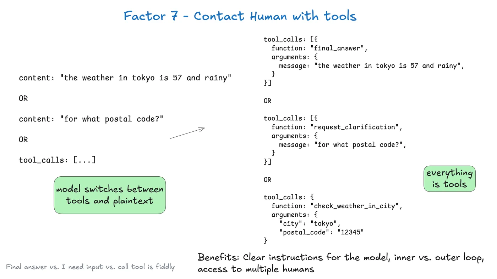
You're putting a lot of weight on that choice of first token, which, in the the weather in tokyo case, is
"the"
but in the fetch_weather case, it's some special token to denote the start of a JSON object.
|JSON>
You might get better results by having the LLM always output json, and then declare it's intent with some natural language tokens like request_human_input or done_for_now (as opposed to a "proper" tool like check_weather_in_city).
Again, you might not get any performance boost from this, but you should experiment, and ensure you're free to try weird stuff to get the best results.
class Options:
urgency: Literal["low", "medium", "high"]
format: Literal["free_text", "yes_no", "multiple_choice"]
choices: List[str]
# Tool definition for human interaction
class RequestHumanInput:
intent: "request_human_input"
question: str
context: str
options: Options
# Example usage in the agent loop
if nextStep.intent == 'request_human_input':
thread.events.append({
type: 'human_input_requested',
data: nextStep
})
thread_id = await save_state(thread)
await notify_human(nextStep, thread_id)
return # Break loop and wait for response to come back with thread ID
else:
# ... other cases
Later, you might receive a webhook from a system that handles slack, email, sms, or other events.
@app.post('/webhook')
def webhook(req: Request):
thread_id = req.body.threadId
thread = await load_state(thread_id)
thread.events.push({
type: 'response_from_human',
data: req.body
})
# ... simplified for brevity, you likely don't want to block the web worker here
next_step = await determine_next_step(thread_to_prompt(thread))
thread.events.append(next_step)
result = await handle_next_step(thread, next_step)
# todo - loop or break or whatever you want
return {"status": "ok"}
The above includes patterns from factor 5 - unify execution state and business state, factor 8 - own your control flow, factor 3 - own your context window, and factor 4 - tools are just structured outputs, and several others.
If we were using the XML-y formatted from factor 3 - own your context window, our context window after a few turns might look like this:
(snipped for brevity)
<slack_message>
From: @alex
Channel: #deployments
Text: Can you deploy backend v1.2.3 to production?
Thread: []
</slack_message>
<request_human_input>
intent: "request_human_input"
question: "Would you like to proceed with deploying v1.2.3 to production?"
context: "This is a production deployment that will affect live users."
options: {
urgency: "high"
format: "yes_no"
}
</request_human_input>
<human_response>
response: "yes please proceed"
approved: true
timestamp: "2024-03-15T10:30:00Z"
user: "alex@company.com"
</human_response>
<deploy_backend>
intent: "deploy_backend"
tag: "v1.2.3"
environment: "production"
</deploy_backend>
<deploy_backend_result>
status: "success"
message: "Deployment v1.2.3 to production completed successfully."
timestamp: "2024-03-15T10:30:00Z"
</deploy_backend_result>
Benefits:
- Clear Instructions: Tools for different types of human contact allow for more specificity from the LLM
- Inner vs Outer Loop: Enables agents workflows outside of the traditional chatGPT-style interface, where the control flow and context initialization may be
Agent->Humanrather thanHuman->Agent(think, agents kicked off by a cron or an event) - Multiple Human Access: Can easily track and coordinate input from different humans through structured events
- Multi-Agent: Simple abstraction can be easily extended to support
Agent->Agentrequests and responses - Durable: Combined with factor 6 - launch/pause/resume with simple APIs, this makes for durable, reliable, and introspectable multiplayer workflows
More on Outer Loop Agents over here
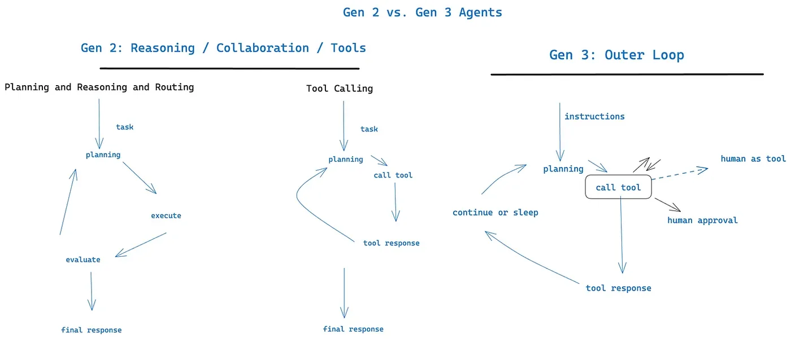
Works great with factor 11 - trigger from anywhere, meet users where they are
08Factor 8 — Own Your Control Flow
If you own your control flow, you can do lots of fun things.
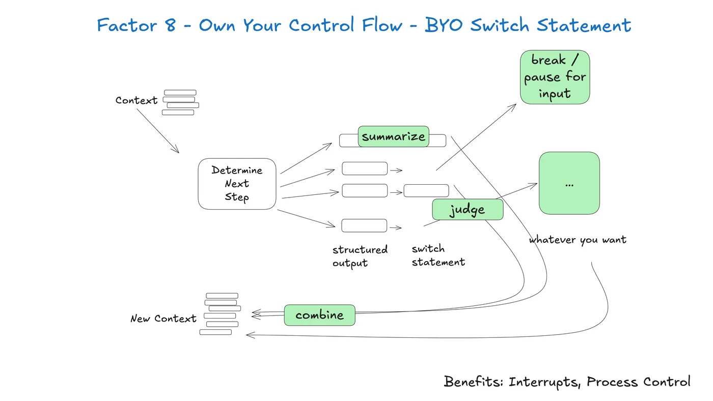
Build your own control structures that make sense for your specific use case. Specifically, certain types of tool calls may be reason to break out of the loop and wait for a response from a human or another long-running task like a training pipeline. You may also want to incorporate custom implementation of:
- summarization or caching of tool call results
- LLM-as-judge on structured output
- context window compaction or other memory management
- logging, tracing, and metrics
- client-side rate limiting
- durable sleep / pause / "wait for event"
The below example shows three possible control flow patterns:
- request_clarification: model asked for more info, break the loop and wait for a response from a human
- fetch_git_tags: model asked for a list of git tags, fetch the tags, append to context window, and pass straight back to the model
- deploy_backend: model asked to deploy a backend, this is a high-stakes thing, so break the loop and wait for human approval
def handle_next_step(thread: Thread):
while True:
next_step = await determine_next_step(thread_to_prompt(thread))
# inlined for clarity - in reality you could put
# this in a method, use exceptions for control flow, or whatever you want
if next_step.intent == 'request_clarification':
thread.events.append({
type: 'request_clarification',
data: nextStep,
})
await send_message_to_human(next_step)
await db.save_thread(thread)
# async step - break the loop, we'll get a webhook later
break
elif next_step.intent == 'fetch_open_issues':
thread.events.append({
type: 'fetch_open_issues',
data: next_step,
})
issues = await linear_client.issues()
thread.events.append({
type: 'fetch_open_issues_result',
data: issues,
})
# sync step - pass the new context to the LLM to determine the NEXT next step
continue
elif next_step.intent == 'create_issue':
thread.events.append({
type: 'create_issue',
data: next_step,
})
await request_human_approval(next_step)
await db.save_thread(thread)
# async step - break the loop, we'll get a webhook later
break
This pattern allows you to interrupt and resume your agent's flow as needed, creating more natural conversations and workflows.
Example - the number one feature request I have for every AI framework out there is we need to be able to interrupt a working agent and resume later, ESPECIALLY between the moment of tool selection and the moment of tool invocation.
Without this level of resumability/granularity, there's no way to review/approve the tool call before it runs, which means you're forced to either:
- Pause the task in memory while waiting for the long-running thing to complete (think
while...sleep) and restart it from the beginning if the process is interrupted - Restrict the agent to only low-stakes, low-risk calls like research and summarization
- Give the agent access to do bigger, more useful things, and just yolo hope it doesn't screw up
You may notice this is closely related to factor 5 - unify execution state and business state and factor 6 - launch/pause/resume with simple APIs, but can be implemented independently.
09Factor 9 — Compact Errors into Context Window
This one is a little short but is worth mentioning. One of these benefits of agents is "self-healing" - for short tasks, an LLM might call a tool that fails. Good LLMs have a fairly good chance of reading an error message or stack trace and figuring out what to change in a subsequent tool call.
Most frameworks implement this, but you can do JUST THIS without doing any of the other 11 factors. Here's an example:
thread = {"events": [initial_message]}
while True:
next_step = await determine_next_step(thread_to_prompt(thread))
thread["events"].append({
"type": next_step.intent,
"data": next_step,
})
try:
result = await handle_next_step(thread, next_step) # our switch statement
except Exception as e:
# if we get an error, we can add it to the context window and try again
thread["events"].append({
"type": 'error',
"data": format_error(e),
})
# loop, or do whatever else here to try to recover
You may want to implement an errorCounter for a specific tool call, to limit to ~3 attempts of a single tool, or whatever other logic makes sense for your use case.
consecutive_errors = 0
while True:
# ... existing code ...
try:
result = await handle_next_step(thread, next_step)
thread["events"].append({
"type": next_step.intent + '_result',
data: result,
})
# success! reset the error counter
consecutive_errors = 0
except Exception as e:
consecutive_errors += 1
if consecutive_errors < 3:
# do the loop and try again
thread["events"].append({
"type": 'error',
"data": format_error(e),
})
else:
# break the loop, reset parts of the context window, escalate to a human, or whatever else you want to do
break
}
}
Hitting some consecutive-error-threshold might be a great place to escalate to a human, whether by model decision or via deterministic takeover of the control flow.
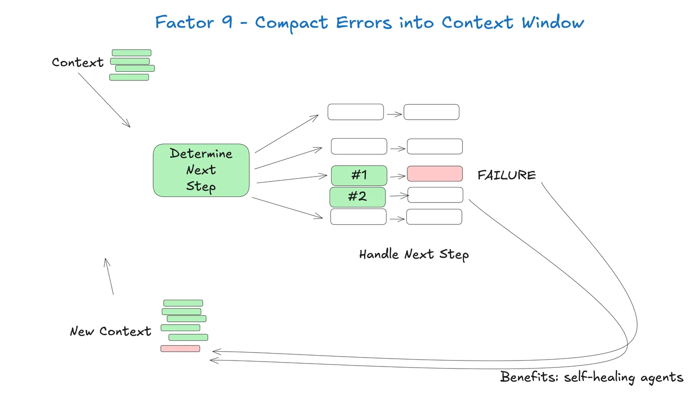
Benefits:
- Self-Healing: The LLM can read the error message and figure out what to change in a subsequent tool call
- Durable: The agent can continue to run even if one tool call fails
I'm sure you will find that if you do this TOO much, your agent will start to spin out and might repeat the same error over and over again.
That's where factor 8 - own your control flow and factor 3 - own your context building come in - you don't need to just put the raw error back on, you can completely restructure how it's represented, remove previous events from the context window, or whatever deterministic thing you find works to get an agent back on track.
But the number one way to prevent error spin-outs is to embrace factor 10 - small, focused agents.
10Factor 10 — Small, Focused Agents
Rather than building monolithic agents that try to do everything, build small, focused agents that do one thing well. Agents are just one building block in a larger, mostly deterministic system.
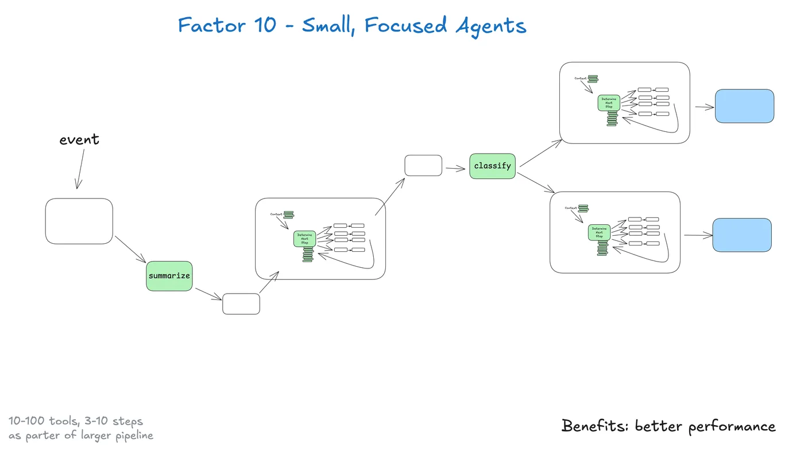
The key insight here is about LLM limitations: the bigger and more complex a task is, the more steps it will take, which means a longer context window. As context grows, LLMs are more likely to get lost or lose focus. By keeping agents focused on specific domains with 3-10, maybe 20 steps max, we keep context windows manageable and LLM performance high.
As context grows, LLMs are more likely to get lost or lose focus
Benefits of small, focused agents:
- Manageable Context: Smaller context windows mean better LLM performance
- Clear Responsibilities: Each agent has a well-defined scope and purpose
- Better Reliability: Less chance of getting lost in complex workflows
- Easier Testing: Simpler to test and validate specific functionality
- Improved Debugging: Easier to identify and fix issues when they occur
What if LLMs get smarter?
Do we still need this if LLMs get smart enough to handle 100-step+ workflows?
tl;dr yes. As agents and LLMs improve, they might naturally expand to be able to handle longer context windows. This means handling MORE of a larger DAG. This small, focused approach ensures you can get results TODAY, while preparing you to slowly expand agent scope as LLM context windows become more reliable. (If you've refactored large deterministic code bases before, you may be nodding your head right now).
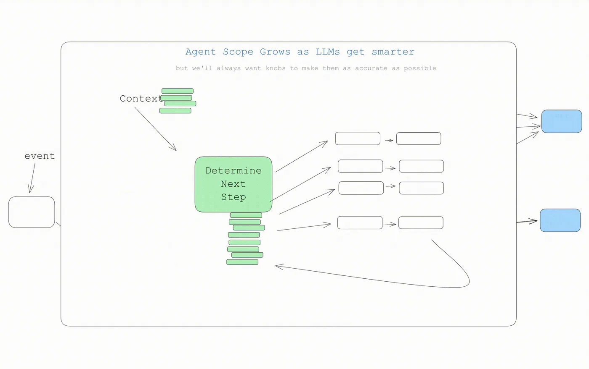
Being intentional about size/scope of agents, and only growing in ways that allow you to maintain quality, is key here. As the team that built NotebookLM put it:
I feel like consistently, the most magical moments out of AI building come about for me when I'm really, really, really just close to the edge of the model capability
Regardless of where that boundary is, if you can find that boundary and get it right consistently, you'll be building magical experiences. There are many moats to be built here, but as usual, they take some engineering rigor.
11Factor 11 — Trigger from Anywhere
If you're waiting for the humanlayer pitch, you made it. If you're doing factor 6 - launch/pause/resume with simple APIs and factor 7 - contact humans with tool calls, you're ready to incorporate this factor.
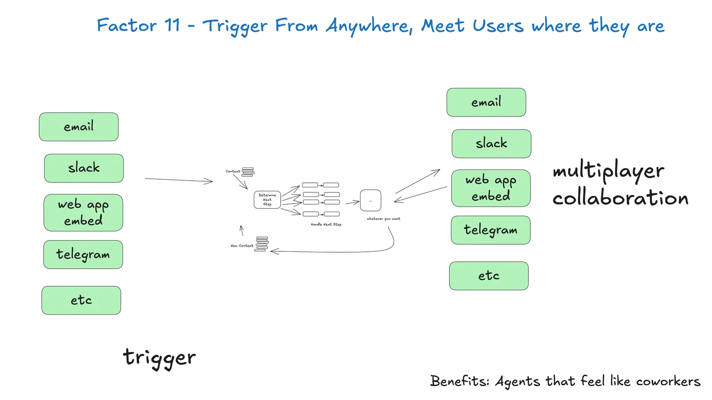
Enable users to trigger agents from slack, email, sms, or whatever other channel they want. Enable agents to respond via the same channels.
Benefits:
- Meet users where they are: This helps you build AI applications that feel like real humans, or at the very least, digital coworkers
- Outer Loop Agents: Enable agents to be triggered by non-humans, e.g. events, crons, outages, whatever else. They may work for 5, 20, 90 minutes, but when they get to a critical point, they can contact a human for help, feedback, or approval
- High Stakes Tools: If you're able to quickly loop in a variety of humans, you can give agents access to higher stakes operations like sending external emails, updating production data and more. Maintaining clear standards gets you auditability and confidence in agents that perform bigger better things
12Factor 12 — Make Your Agent a Stateless Reducer
Okay so we're over 1000 lines of markdown at this point. This one is mostly just for fun.
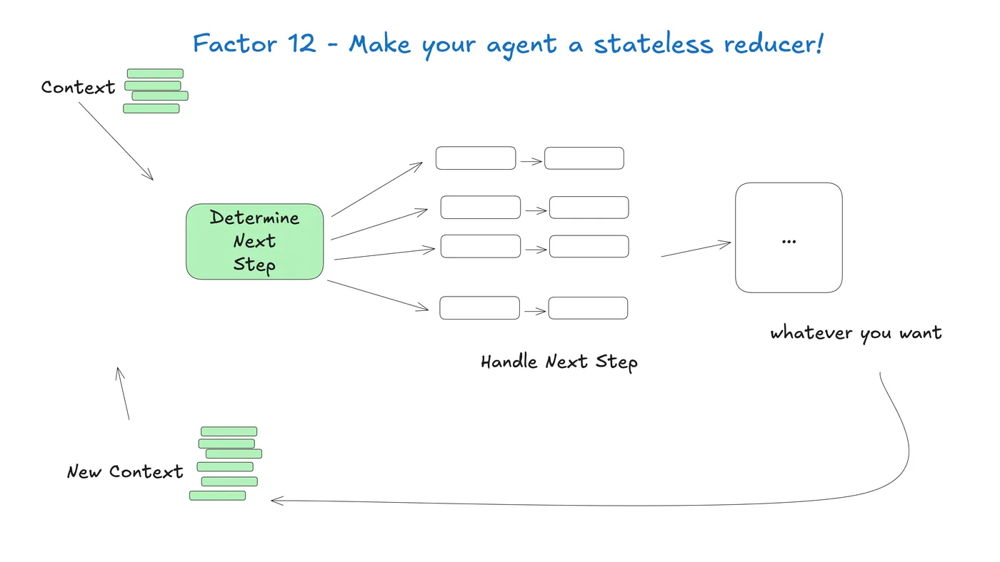
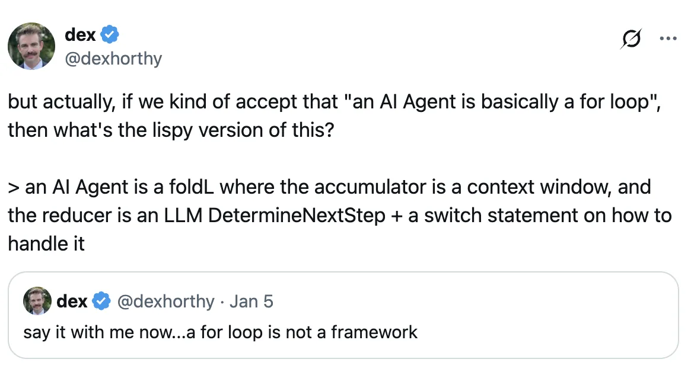
13Factor 13 — Pre-fetch All the Context You Might Need
If there's a high chance that your model will call tool X, don't waste token round trips telling the model to fetch it, that is, instead of a pseudo-prompt like:
When looking at deployments, you will likely want to fetch the list of published git tags,
so you can use it to deploy to prod.
Here's what happened so far:
{{ thread.events }}
What's the next step?
Answer in JSON format with one of the following intents:
{
intent: 'deploy_backend_to_prod',
tag: string
} OR {
intent: 'list_git_tags'
} OR {
intent: 'done_for_now',
message: string
}
and your code looks like
thread = {"events": [initial_message]}
next_step = await determine_next_step(thread)
while True:
switch next_step.intent:
case 'list_git_tags':
tags = await fetch_git_tags()
thread["events"].append({
type: 'list_git_tags',
data: tags,
})
case 'deploy_backend_to_prod':
deploy_result = await deploy_backend_to_prod(next_step.data.tag)
thread["events"].append({
"type": 'deploy_backend_to_prod',
"data": deploy_result,
})
case 'done_for_now':
await notify_human(next_step.message)
break
# ...
You might as well just fetch the tags and include them in the context window, like:
- When looking at deployments, you will likely want to fetch the list of published git tags,
- so you can use it to deploy to prod.
+ The current git tags are:
+ {{ git_tags }}
Here's what happened so far:
{{ thread.events }}
What's the next step?
Answer in JSON format with one of the following intents:
{
intent: 'deploy_backend_to_prod',
tag: string
- } OR {
- intent: 'list_git_tags'
} OR {
intent: 'done_for_now',
message: string
}
and your code looks like
thread = {"events": [initial_message]}
+ git_tags = await fetch_git_tags()
- next_step = await determine_next_step(thread)
+ next_step = await determine_next_step(thread, git_tags)
while True:
switch next_step.intent:
- case 'list_git_tags':
- tags = await fetch_git_tags()
- thread["events"].append({
- type: 'list_git_tags',
- data: tags,
- })
case 'deploy_backend_to_prod':
deploy_result = await deploy_backend_to_prod(next_step.data.tag)
thread["events"].append({
"type": 'deploy_backend_to_prod',
"data": deploy_result,
})
case 'done_for_now':
await notify_human(next_step.message)
break
# ...
or even just include the tags in the thread and remove the specific parameter from your prompt template:
thread = {"events": [initial_message]}
+ # add the request
+ thread["events"].append({
+ "type": 'list_git_tags',
+ })
git_tags = await fetch_git_tags()
+ # add the result
+ thread["events"].append({
+ "type": 'list_git_tags_result',
+ "data": git_tags,
+ })
- next_step = await determine_next_step(thread, git_tags)
+ next_step = await determine_next_step(thread)
while True:
switch next_step.intent:
case 'deploy_backend_to_prod':
deploy_result = await deploy_backend_to_prod(next_step.data.tag)
thread["events"].append(deploy_result)
case 'done_for_now':
await notify_human(next_step.message)
break
# ...
Overall:
If you already know what tools you'll want the model to call, just call them DETERMINISTICALLY and let the model do the hard part of figuring out how to use their outputs
Again, AI engineering is all about Context Engineering.
14Glossary
Terms the guide uses without stopping to define. This section is the one part of the page not written by the author.
- Agent
- As the guide defines it: a prompt, a switch statement, an accumulating context window and a loop. Not a framework, and not necessarily autonomous.
- BAML
- A domain-specific language for writing LLM prompts and their expected return types as ordinary source files. The guide uses it for the factor 2 example, and says any templating approach works as well.
- Context window
- The block of text a model sees on a single call — instructions, retrieved documents, and the history of what has happened so far. Everything the model knows in that moment.
- DAG — directed acyclic graph
- A graph of steps with arrows between them and no way back to a step you have left. The shape of an ordinary program, and of the pipelines Airflow and Prefect run.
- Determine next step
- The guide's name for the single model call at the heart of the loop: given everything that has happened, return structured JSON saying what to do next.
- foldL / reducer
- A function that walks a sequence carrying an accumulator, combining each element into it. Factor 12's claim is that an agent is exactly this, with the context window as the accumulator.
- Inner loop / outer loop
- Inner-loop agents are started by a human in a conversation. Outer-loop agents are started by an event, a cron or a webhook, and reach for a human only when they need one.
- MCP — Model Context Protocol
- A standard for exposing tools and data to a model. The guide explicitly declines to discuss it, in its second disclaimer.
- Micro agent
- A small agent — three to ten steps — embedded in a larger deterministic pipeline, rather than an agent that owns the whole workflow.
- Structured output / tool call
- JSON emitted by a model in a shape your code can parse. Factor 4's argument is that these two names describe the same thing.
- Thread
- The guide's term for the serialisable list of events — messages, tool calls, results, errors — that makes up a run. Factor 5 argues it should be the only state you keep.
15Sources
The original lives at github.com/humanlayer/12-factor-agents and is still being edited. This copy is pinned to commit d20c728, rendered 1 August 2026.
Written by Dex Horthy with contributors at HumanLayer. The author credits early feedback from @iantbutler01, @tnm, @hellovai, @stantonk, @balanceiskey, @AdjectiveAllison, @pfbyjy, @a-churchill and the SF MLOps community, and thanks everyone who has contributed to the repository since.
All content and images are licensed CC BY-SA 4.0; code is licensed Apache 2.0. This page is a redistribution under the same terms.
The author's own list of related resources
- Contribute to this guide here
- I talked about a lot of this on an episode of the Tool Use podcast in March 2025
- I write about some of this stuff at The Outer Loop
- I do webinars about Maximizing LLM Performance with @hellovai
- We build OSS agents with this methodology under got-agents/agents
- We ignored all our own advice and built a framework for running distributed agents in kubernetes
- Other links from this guide:
- 12 Factor Apps
- Building Effective Agents (Anthropic)
- Prompts are Functions
- Library patterns: Why frameworks are evil
- The Wrong Abstraction
- Mailcrew Agent
- Mailcrew Demo Video
- Chainlit Demo
- TypeScript for LLMs
- Schema Aligned Parsing
- Function Calling vs Structured Outputs vs JSON Mode
- BAML on GitHub
- OpenAI JSON vs Function Calling
- Outer Loop Agents
- Airflow
- Prefect
- Dagster
- Inngest
- Windmill
- The AI Agent Index (MIT)
- NotebookLM on Finding Model Capability Boundaries